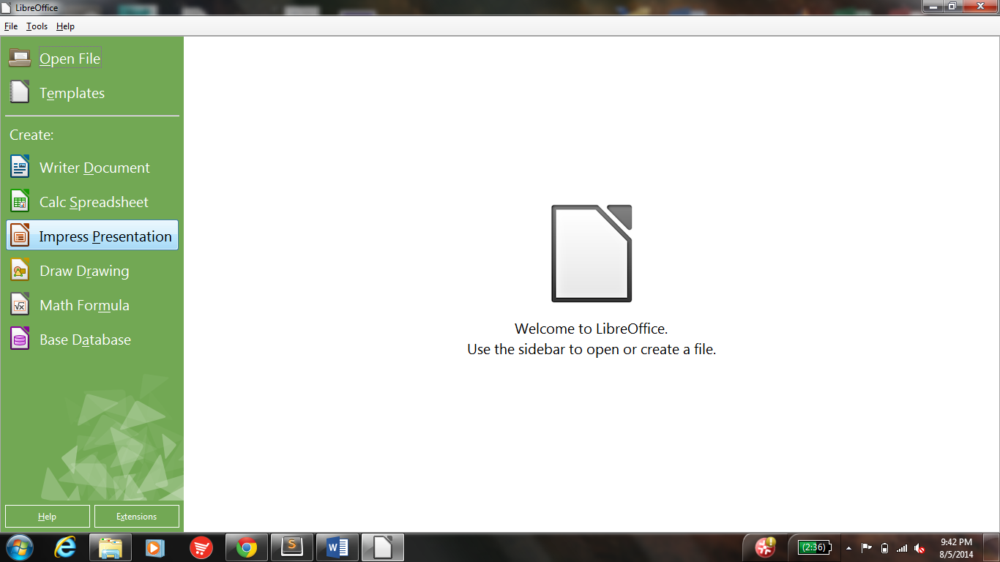

 ---
layout: base
title: "How to use LibreOffice to make a presentation"
---
<article data-hd-class="task"> 
<h1>How to use LibreOffice to Download a Presentation!</h1> 
<p>LibreOffice has many features, such as its ability to let you create presentations!</p> 
<section data-hd-class="task/context"> 
	<h2>Context</h2>
<p>This will allow you to use LibreOffice for many tasks! </p>
</section> 
<section data-hd-class="task/prereq"> 
<h2>Pre-requisites</h2>  
<ul> 
<li>Have LibreOffice downloaded</li>
</ul> 
</section> 
<section data-hd-class="task/steps-informal"> 
<h2>Steps</h2>
<ol> 
<li>Open LibreOffice</li> 
<li>Click Impress Presentation, under Create:</li>
<li>Use the program as you would Microsoft PowerPoint!</li>
</ol> 
</section>
<section data-hd-class="task/example">
<h2>Example</h2>
<p>Your screen should look like this when you open LibreOffice <em>(Figure 1)</em></p>
<figure>
  
  <figcaption>Figure 1: Presentation selection button highlighted</figcaption>
</figure>
	<a href="c-instructions.html">Home Page</a>
</section>
</article>
